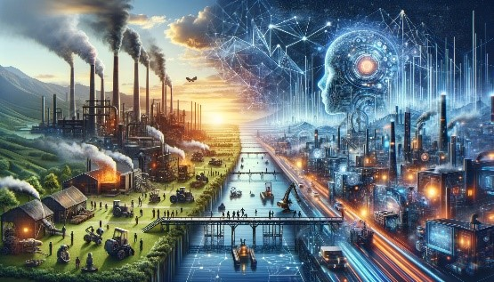

Relationship between AI and the Industrial Revolution
The relationship between Artificial Intelligence (AI) and the Industrial Revolution is primarily one of progression and evolution in technological advancement. The Industrial Revolution, beginning in the late 18th century, marked a significant shift from manual labor to mechanized manufacturing processes. It laid the groundwork for the technological advancements we see today, including AI.  AI, emerging prominently in the 20th and 21st centuries, represents a new phase in this technological evolution. It has been likened to a new industrial revolution - often termed the Fourth Industrial Revolution also known as Industry 4.0 - because of its profound impact on the way we live and work. AI technologies have the potential to revolutionize industries by automating complex tasks, optimizing production processes, enhancing supply chain management, and driving innovation in product and service development. In essence, AI can be seen as a continuation of the transformative processes started by the Industrial Revolution, pushing the boundaries of what machines are capable of and reshaping the industrial landscape once again. The integration of AI in various industries has led to increased efficiency, productivity, and economic growth, mirroring the transformative impacts of the earlier industrial revolutions.